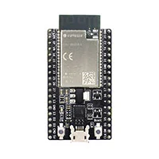

Explore my work in software engineering, hardware development, and data.
Click on a project to learn more about it.
I developed a Spotify remote controller using an ESP32 microcontroller, C++, and the Spotify Web API. This project allowed me to explore how hardware and software communicate through APIs and how physical devices can interact with digital applications.

Technologies: ESP32, C++, Arduino IDE, Spotify Web API
I designed a relational database for a travel recommendation system using SQL and MySQL. The database organizes information about destinations, climate, passport access, and travel preferences to support personalized travel recommendations.
This project helped me develop my understanding of database design, entity relationships, and how structured data can support decision-making.
Technologies: SQL, MySQL, Relational Database Design
I worked on an automated water dispenser using Arduino. This project helped me gain experience with microcontrollers, hardware components, and programming physical systems.
I particularly enjoyed exploring how programming can control physical devices and how small hardware projects can solve everyday problems.
Technologies: Arduino, C++, Hardware Prototyping
Working on these projects has helped me understand how different areas of computer science connect. Through my hardware projects, I've learned about programming microcontrollers and integrating software with physical components.
My database projects have given me experience organizing information, designing relational schemas, and writing SQL queries. I've also developed problem-solving skills through debugging, testing, and improving my code.
Throughout my coursework and personal projects, I've worked with several programming languages and technologies.
This visualization was created using D3.js, a JavaScript library for data visualization. It demonstrates how programming languages can be represented using a bar chart. The values are illustrative and do not represent measured proficiency.